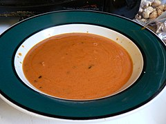
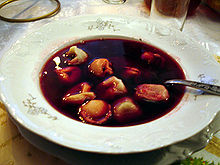
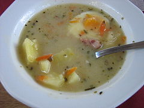
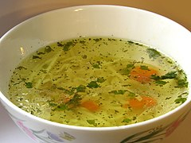

Głównym składnikiem dania są świeże pomidory lub koncentrat pomidorowy. Zupę podaje się z makaronem lub ryżem, lanym ciastem czy tzw. zacierką. Część osób do poprawy smaku stosuje zioła, np. bazylię, natkę pietruszki oraz zabiela śmietaną. Zupa pomidorowa składa się na tradycyjny obiad kuchni polskiej. Przepis na to danie był znany w Polsce przynajmniej od XIX wieku.

Historyczne wzmianki wskazują na ukraińskie pochodzenie barszczu, było to danie spożywane głównie przez chłopów. Początkowo barszczem nazywano polewkę przygotowaną z kiszonych liści barszczu zwyczajnego. Współcześnie barszczem nazywa się kwaśną zupę z soku z kapusty kiszonej, soku z kiszonych buraków czerwonych, kiszonego szczawiu lub innych zwykle białych kiszonych warzyw. W Polsce barszcz czerwony z buraków jest podawany na początku wieczerzy Wigilii Bożego Narodzenia. Barszcz biały podawany jest z białą, gotowaną kiełbasą, jajkiem oraz ziemniakami lub kaszą. Odmianą barszczu białego jest barszcz chrzanowy przygotowywany na wywarze z gotowanej szynki, dodatkowo zabielony śmietaną z tartym chrzanem. Zupą podobną do barszczu białego jest żur, przygotowywany z wywaru mięsnego, zwykle wędzonego, zagęszczany zakwasem chlebowym. Tradycyjnie podawany ze smażoną kiełbasą i jajkiem oraz chlebem.

Żur (żurek, zakwaszona zupa mączna) – zupa przyrządzana na bazie mięsnego wywaru zagęszczanego zakwasem chlebowym, zwykle z mąki żytniej, mająca charakterystyczny kwaśny smak. Specjalność regionalnej kuchni polskiej, białoruskiej (жур, кісяліца), czeskiej i słowackiej oraz innych Słowian północnych. Przygotowana w połączeniu z wywarem z kości i jarzyn, albo też gotowana z kiełbasą, wędzonym boczkiem wieprzowym, żeberkami, ogonem wieprzowym. Nazwa żur pochodzi od dawnego niemieckiego wyrazu sūr, dziś sauer – kwaśny, (s)kisły. W Czechach zupa ta jest znana pod nazwą kyselo (czeskie słowo kyselý – kwaśny).

Zupa pierwotnie powstawała jako efekt długotrwałego gotowania w wodzie mięsa, które w dawnych czasach było konserwowane przez zasolenie i wysuszenie. Wywar ten zwano rozsół (czy rozsol), skąd wywodzi się dzisiejsza nazwa. Rosół jest jedną z narodowych potraw polskich. W Polsce w okresie PRL rosół uległ upowszechnieniu, należy do dań wskazywanych jako tradycyjne i typowe dla niedzielnego obiadu lub uroczystości obok kotleta schabowego.